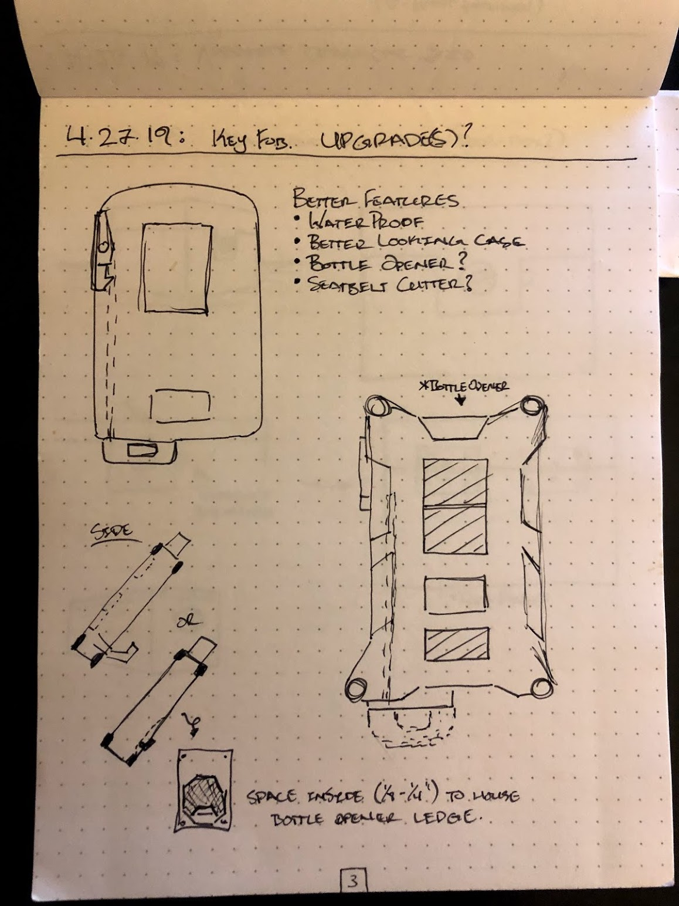
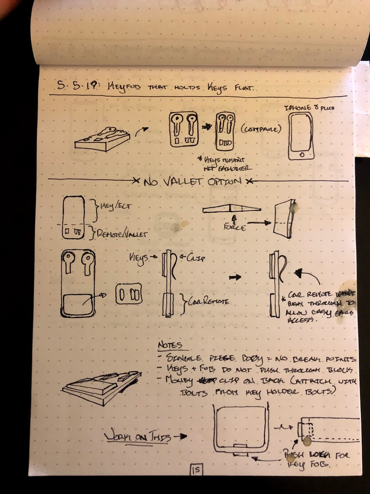
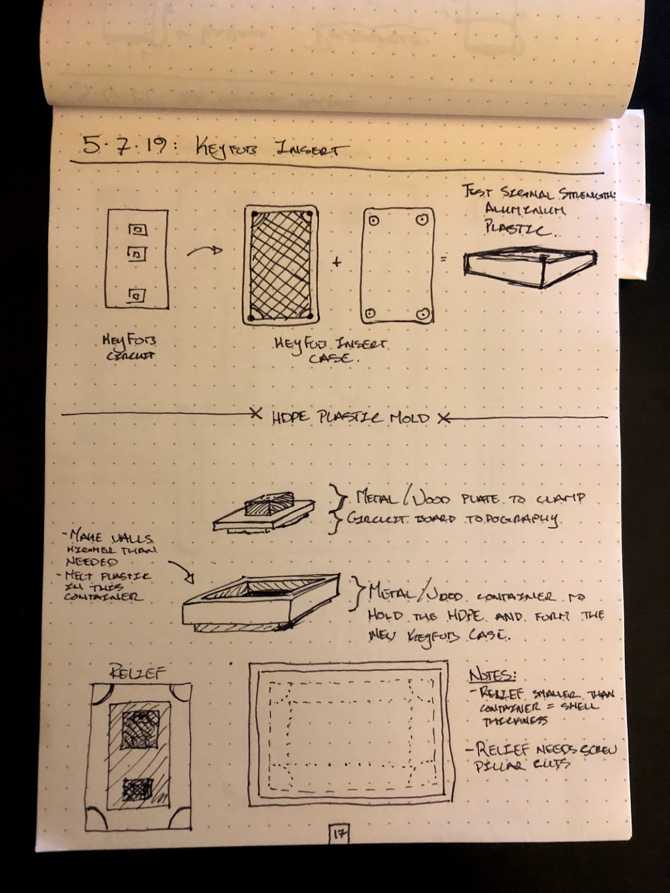
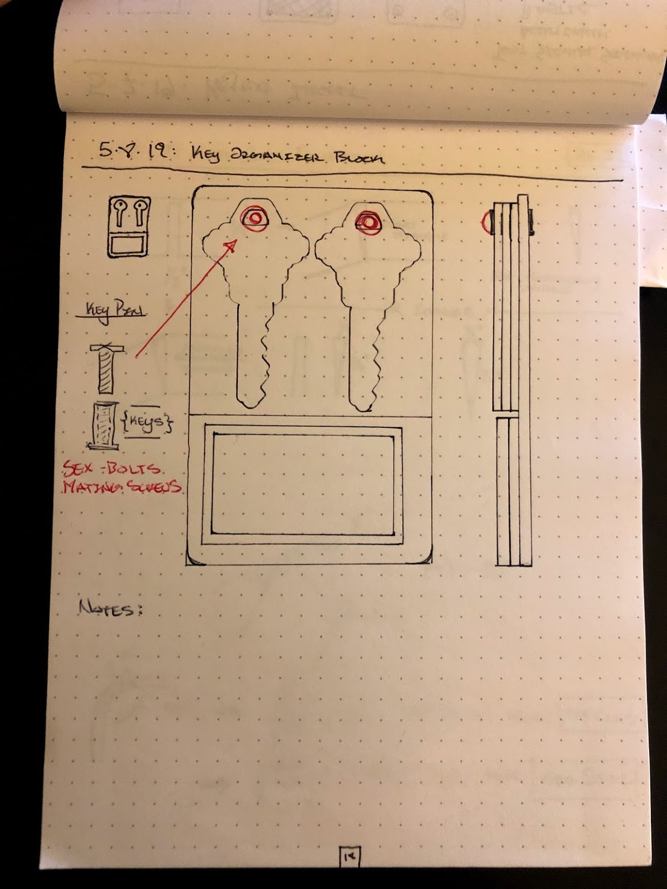
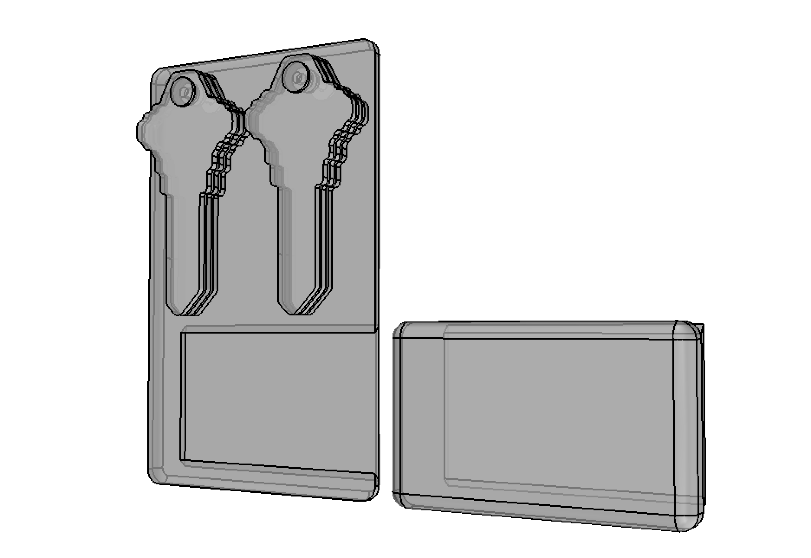

custom keyfob
looking at my remote-start keyfob for my offroad truck, something was amiss. i had this tiny, rounded plastic keyfob who's only hope of surviving the elements was that the circuit was so low voltage water wouldn't really effect it.
so - i took it apart and started designing the casing for the keyfob. something more useful and tougher!
so - i took it apart and started designing the casing for the keyfob. something more useful and tougher!


but i still had all these other keys on my keychain and that was simply too much. i want minimal design for everything. i want a key set that smaller than an iphone in the same form factor.
deciding on an aluminum billet and a completely redesigned keyfob case, the lay-flat key organizer was emerging.
deciding on an aluminum billet and a completely redesigned keyfob case, the lay-flat key organizer was emerging.
of course, a new case means new challenges. how would i make and reproduce a case for the guts of the keyfob.
i had been watching people recycle HDPE and slowly make amazingly tough items out of them. what if i could use that plastic to make a battle-ready keyfob case.
i had been watching people recycle HDPE and slowly make amazingly tough items out of them. what if i could use that plastic to make a battle-ready keyfob case.


i needed to see this in full scale. something i could interact with - but i was at this point in class at a coding bootcamp.
luckily i had my keys, the keyfob, my iphone, and a straight-ish pencil box. the whole form factor of this fob, using 1/8" aluminum stacked up, with two sets of 3 stacked keys, all came to a thickness of about my iphone 8.
luckily i had my keys, the keyfob, my iphone, and a straight-ish pencil box. the whole form factor of this fob, using 1/8" aluminum stacked up, with two sets of 3 stacked keys, all came to a thickness of about my iphone 8.
i was able to create a model of the keyfob organizer and futher thing about how the vallet keyfob (the remote start portion) would be released from the aluminum body.
